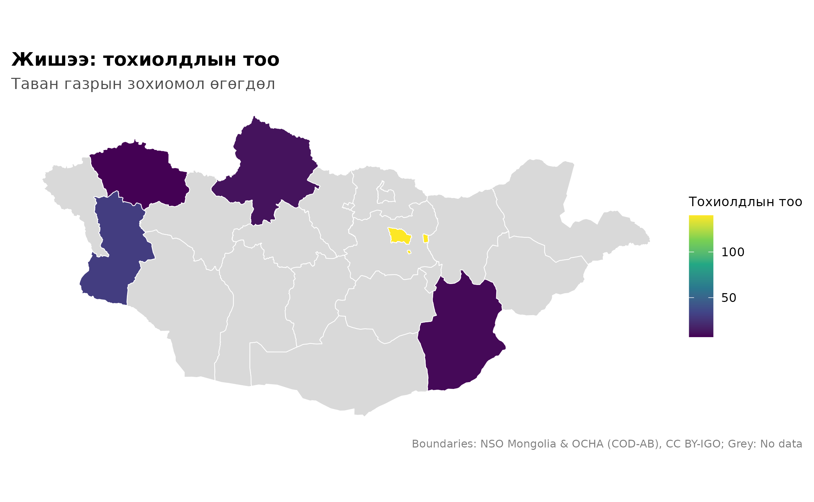
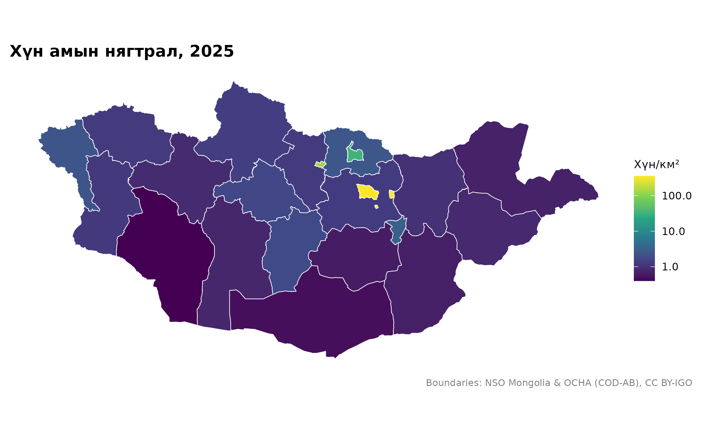
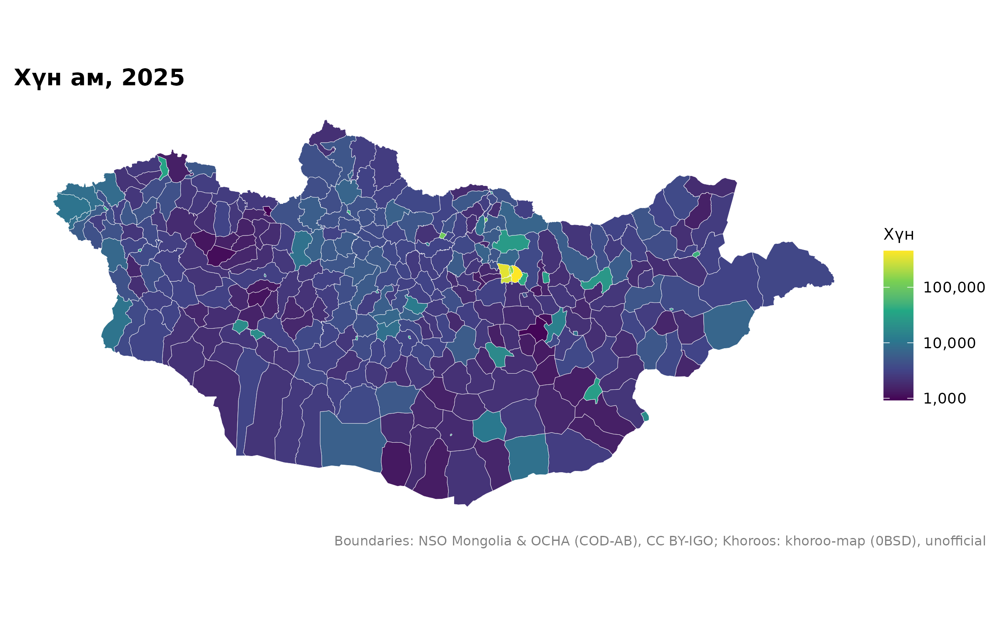
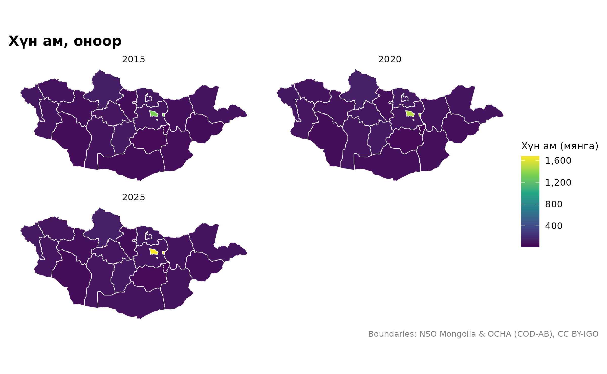

mn_join() хүснэгтийг хил заагтай холбож,
mn_map() үр дүнг зурна. Доорх жишээнүүд багцад орсон
өгөгдөл ашиглана.
library(mongolmaps)
options(mongolmaps.lang = "mn")
library(ggplot2)Жижиг хүснэгтээс эхлэх
Энэ зохиомол хүснэгт нэрийн өөр бичлэгүүдийг харуулна. Газар бүр нэг мөртэй байна. Албан ёсны код байвал түүнийг ашиглах нь дээр.
cases <- data.frame(
aimag = c("Khovsgol", "Hovd", "Увс", "Ulan Bator", "Dornogobi"),
cases = c(12, 30, 7, 140, 9)
)
cases_map <- mn_join(cases, by = "aimag", level = "aimag")
mn_map(cases_map, fill = cases, title = "Жишээ: тохиолдлын тоо") +
labs(fill = "Тохиолдлын тоо", subtitle = "Таван газрын зохиомол өгөгдөл")
Зурагт бүх аймаг үлдэнэ. Саарал нь өгөгдөл өгөөгүйг илэрхийлнэ.
Ажигласан тэг утгад 0, дутуу утгад NA
хэрэглэнэ. Тоог түвшин болгон харьцуулах бол тохирох хуваарь буюу хүн
амын суурь хэрэгтэй.
ҮСХ-ны хүснэгтийг кодоор холбох
ҮСХ-ны хүснэгтэд улсын дүн, бүс, аймаг, сумын мөрүүд хамт байдаг.
Ихэвчлэн Region нэртэй кодын баганаар холбоод шаардлагатай
түвшингээ сонгоно. Бусад түвшний мөрийг mn_join()
хасна.
pop_2025 <- mn_example_population[mn_example_population$Year == 2025, ]
aimag_pop <- mn_join(pop_2025, by = "Region", level = "aimag")
mn_map(aimag_pop, fill = value / area_km2, trans = "log10",
title = "Хүн амын нягтрал, 2025") +
labs(fill = "Хүн/км²")
Зарим газар маш өндөр утгатай үед логарифмын өнгөний хуваарь тусална. Тайлбарын тоонууд анхны нэгжээрээ харагдана. Ижил хүснэгтээс сум, дүүргийн хүн амыг авч болно:
soum_pop <- mn_join(pop_2025, by = "Region", level = "soum")
mn_map(soum_pop, fill = value, trans = "log10", title = "Хүн ам, 2025") +
labs(fill = "Хүн")
Онуудаар харьцуулах
strata-д ажиглалтыг ялгах багана, жишээ нь
Year-ийг өгнө. Ингэснээр хил зааг бүр он тус бүрт нэг удаа
орно. Бүх зураг ижил өнгөний хуваарьтай.
pop_years <- mn_join(mn_example_population, by = "Region", level = "aimag",
strata = "Year", value_cols = "value")
mn_map(pop_years, fill = value / 1000, title = "Хүн ам, оноор") +
facet_wrap(~Year, ncol = 2) +
labs(fill = "Хүн ам (мянга)")
Нас, хүйс болон тусдаа ажиглалт үүсгэх бусад баганыг мөн зарлана.
Газар, бүлгийн хослол давхардвал зогсоохын тулд
strict = TRUE хэрэглэнэ.
Ижил нэртэй сумдыг ялгах
Мөр бүрийн аймгийг by_parent-аар өгнө. Бүх мөр нэг
аймгийнх бол within хэрэглэж болно.
herders <- data.frame(
aimag = c("Dornod", "Govi-Altai", "Khentii"),
soum = c("Bayan-Uul", "Bayan-Uul", "Bayan-Adarga"),
herders = c(820, 640, 910)
)
joined <- mn_join(herders, by = "soum", level = "soum", by_parent = "aimag")
knitr::kable(sf::st_drop_geometry(joined)[
!is.na(joined$herders), c("name", "aimag_pcode", "herders")
])| name | aimag_pcode | herders |
|---|---|---|
| Баян-Уул | MN21 | 820 |
| Баян-Адарга | MN23 | 910 |
| Баян-Уул | MN82 | 640 |
Малчдын тоо нь холболтыг тайлбарлах зохиомол өгөгдөл.
Холболтоо шалгах
Анхны мөр бүрийг хэрхэн боловсруулсныг шалгана. Мөрийн дугаар нь эх хүснэгтийн дугаар юм.
knitr::kable(mn_join_audit(cases_map)[c("row", "x", "pcode", "status", "action")])| row | x | pcode | status | action |
|---|---|---|---|---|
| 1 | Khovsgol | MN67 | exact | joined |
| 2 | Hovd | MN84 | exact | joined |
| 3 | Увс | MN85 | exact | joined |
| 4 | Ulan Bator | MN11 | exact | joined |
| 5 | Dornogobi | MN44 | exact | joined |
mn_match("Bayan-Uul", level = "soum", details = TRUE) нь
боломжит тохирлуудыг харуулна. Бичлэг ойролцоо байх нь зөв газар гэдгийг
батлахгүй. Холболтыг шалгах, зураг
харьцуулах-аас дэлгэрэнгүйг үзнэ үү.
ҮСХ-ноос шинэ хүснэгт татах
mongolstats нэмэлт багц ҮСХ-ны хүснэгт татна. Доорх жорт интернет, ажиллаж буй API хэрэгтэй тул энэ гарын авлагыг бүтээхэд ажиллуулаагүй. Сонголтыг өөрчлөхөөс өмнө хүснэгтийн хэмжээсийг шалгана.
library(mongolstats)
tbl <- "DT_NSO_0300_002V4"
regions <- nso_dim_values(tbl, "Region")$code
years <- nso_dim_values(tbl, "Year", labels = "en")
latest <- max(as.integer(years$code), na.rm = TRUE)
pop <- nso_data(tbl, selections = list(Region = regions, Year = as.character(latest)),
labels = "en")
mn_map(mn_join(pop, by = "Region", level = "aimag"), fill = value) +
ggplot2::labs(fill = "Хүн")